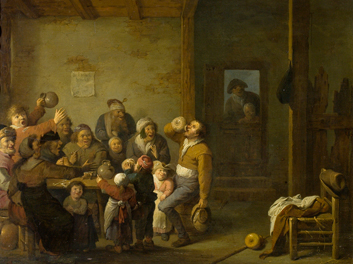
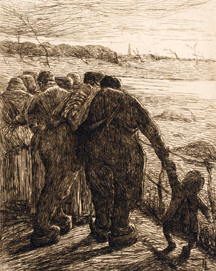
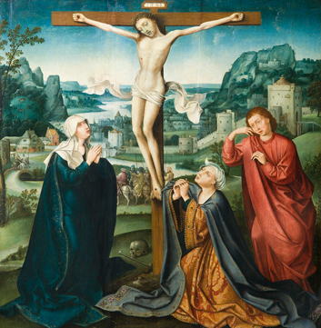

Roger SOMVILLE, De Knappe Brusselse, Tweede helft 20e eeuw, 54 x 71,5 cm (dagmaat), Pastel op papier

Pieter De BLOOT (1601/02 – 1658) De koning drinkt, 1633, 35 x 44,5 cm (dagmaat), Olie op hout

Eugène LAERMANS (1864-1940), De avond, 1891, 23,5 x 18 cm, Ets op papier

Toegeschreven aan Cornelis METSYS, Landschap met kruisiging, 16de eeuw, 82 x 79 cm, Olie op hout
Het kunstpatrimonium
Op verzoek van de gemeentelijke overheid is MoMuse sinds februari 2006 verantwoordelijk voor het beheer van het kunstpatrimonium van de gemeente.
Een eerste taak bestond er in de inventaris van deze kunstcollectie te actualiseren. Er werd een kunsthistorica aangeworven die de collectie uitgebreid in kaart bracht.
De collectie bestaat uit schilderijen, waarvan de oudste dateren uit de 16e eeuw, lithografieën, etsen, gravures en beeldhouwwerken, en bestaat uit een 1000 tal werken. Hiervan zal binnenkort een groot deel te zien zijn op deze website.
Vervolgens begon het museum met een grote restauratie- en inkaderingscampagne. Deze campagne werd vijf jaar geleden begonnen en gaat nog steeds verder. Alleen op die manier kan de kunstcollectie tot haar recht komen tijdens tijdelijke tentoonstellingen.
De meeste stukken uit de collectie zijn niet toegankelijk voor het publiek en sieren de gemeentelijke gebouwen, de kantoren van burgemeester en schepenen en van de gemeenteadministratie. Andere werken worden bewaard in het depot.
Tijdelijke tentoonstellingen:
MoMuse organiseerde reeds verscheidene tijdelijke tentoonstellingen.
In 2005/2006 werkte MoMuse mee aan de tentoonstelling “Molenbeek, Stadsverhalen”, die werd georganiseerd door het Brussels Museum voor Arbeid en Industrie – “La Fonderie”. Deze tentoonstelling bestond uit twee luiken. Enerzijds in de “Salle des Tourneurs”, op de gelijkvloerse verdieping van de voormalige Compagnie des Bronzes, en een tweede luik op de eerste verdieping waar het publiek kon kennismaken met getuigenissen van inwoners van Molenbeek en allerhande plannen en kaarten. Deze tentoonstelling werd ingehuldigd in februari 2006. Ze werd met meer dan een jaar verlengd.
In dezelfde periode organiseerde het museum de tentoonstelling “Beelden en Verbeeldingen van Sint-Jans-Molenbeek”. Deze bracht een kleine selectie uit de rijke iconografische collectie waarover MoMuse beschikt. De expositie werd opgezet naar aanleiding van de Erfgoeddagen in 2005. De tentoonstelling liep in de trappenzaal van het gemeentehuis op 17 en 18 september 2005. Van 29 november tot 16 december 2005 verhuisde ze naar het Atrium van het Ministerie van de Franse Gemeenschap, op de Leopold II-laan. Op verzoek van Staatssecretaris voor Monumenten en Landschappen werd ze tevens getoond in de Sint-Gorikshallen van 17 februari tot 21 april 2006, en wegens succes met een maand verlengd. De catalogus van deze tentoonstelling is beschikbaar in het museum.
In 2007 organiseerde het museum, in samenwerking met het Huis van Culturen en Sociale Samenhang, de Franse Gemeenschap, en De Open Monumentendagen, de tentoonstelling “Verborgen Schatten”. Voor het eerst kon het publiek kennis maken met een vijftigtal werken uit de gemeentelijke kunstcollectie. Zowel 16e eeuwse schilderijen als meer actuele werken rond de thema’s portretten, landschappen, en scènes uit het dagelijkse leven, werden aan het publiek getoond. De collectie bevat meesters als Antoon Van Dijck, François Clouet, Adriaen Brouwer, Pieter De Bloot, Cornelis Metsys, Nicolas De Largillierre, Eugène Laermans, Pierre Paulus de Châtelet, Juliette Wytsman, Roger Somville en Léon Spilliaert. De tentoonstelling kende een enorm succes en liep van 13 september 2007 tot 30 oktober 2007. De catalogus is tevens te verkrijgen in het museum.
Bruiklenen van kunstwerken uit de gemeentelijke kunstcollectie
MoMuse beheert de bruiklenen uit de gemeentelijke kunstcollectie. Door kunstwerken uit te lenen kan de collectie aan een zo ruim mogelijk publiek worden getoond. Met toestemming van de gemeentelijke overheid kunnen kunstwerken worden uitgeleend voor nationale en internationale tijdelijke tentoonstellingen. Recent werden werken uitgeleend aan het Museum van Elsene (Brussel), C-Mine (Genk), Musée de Flandre (Cassel, Frankrijk), en het Roemeens Nationaal Museum voor Kunsten te Boekarest, in het kader van het Belgisch voorzitterschap van de Raad van Europa.
Voor meer info, neem contact op met:
- MoMuse
Michel Van Leeuw, Directeur
Mommaertsstraat 2a
B-1080 Sint-Jans-Molenbeek
00.32.2.414.17.52
info(at)momuse.be
- MoMuse
Petra Vandermeiren, Medewerkster
Mommaertsstraat 2a
B-1080 Sint-Jans-Molenbeek
00.32.2.414.17.52
info(at)momuse.be
"Foto credits © KIK-IRPA"